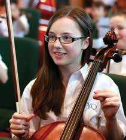

Julianstown Youth Orchestra

Founded in 2011, Julianstown Youth Orchestra includes players from Louth, Meath & Dublin. The orchestra has already performed at the National Concert Hall, the Convention Centre, Dublin and Solstice Arts Centre, Navan. This is the orchestra's first concert in Drogheda.
Led by leading conductor, Fergus Sheil, JYO has worked with composer Brian Irvine and with star international violinist Tasmin Little. JYO has received mentorship from both the RTE Concert Orchestra and RTE National Symphony Orchestra, collaborating with both for concerts in Navan.
JYO is delighted to be joined by rising young violinist Jennifer Murphy, currently a scholarship student at the Royal Academy of Music in London.
Saturday 3 May
Venue: The Barbican
Times: 5:00 pm Sat 3 May
Tickets: 10 at door, children free